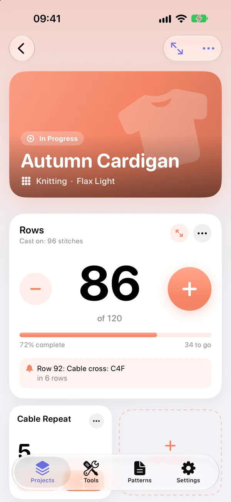

A row counter app for knitting and crochet
Every knitter knows the moment: you put your work down for a cup of tea, pick it up again and have no idea whether you just finished row 37 or row 38. YarnSpace is a row counter app for iPhone, iPad, Mac and Apple Watch that keeps the count with your project, together with its pattern, yarn and notes, so you always know where you are.
Free download · iPhone, iPad, Mac & Apple Watch · No account needed
Why a row counter app beats paper and clickers
Tally marks on the pattern work until the pattern gets wet, and a clicker on the needle works until you bump it or forget to press it. A counter on your phone has a few advantages that matter once a project gets bigger:
- One counter per project. If you have a sweater, a pair of socks and a blanket on the go, each one keeps its own count. You never reset the wrong one.
- More than one count at a time. Many patterns ask you to track rows and repeats at once, for example “work the cable repeat 6 times, crossing every 8th row”.
- It tells you what's coming. A counter that knows you're on row 86 can also remind you that the cable cross comes in row 92.
- It's always with you. Your phone is already next to you, and your projects sync to your iPad and Mac through iCloud.
What the YarnSpace row counter does
- Counters for rows, stitches and repeats in every project, so the row count and the repeat count each have their own counter.
- Reminders for the rows that matter, like “decrease in row 24” or “cable cross in row 92”, so you don't have to keep the pattern open all the time.
- A big focus counter you can tap without looking, so your eyes stay on your stitches.
- Progress at a glance: set a target and see how far you are, for example row 86 of 120.
- Timer, photos and notes for each project, so you know how long it took and what you changed.
- Pattern and yarn in the same place. A project keeps its counters next to its pattern and the yarn you're using.


Count rows on your Apple Watch
The most comfortable way to count is on your wrist. With the YarnSpace Apple Watch app you tap the plus after every row while your hands stay on the needles or the hook. You feel a light tap on your wrist for each row and a stronger one when a reminder is due. A widget puts your current row right on the watch face, and everything stays in sync with your iPhone.
The Apple Watch app is part of YarnSpace Pro. The counters on iPhone, iPad and Mac are free.
Tips for counting rows without losing your place
- Count when you finish a row, not when you start one. Make tapping the counter part of turning your work, and the number on the screen is always the number of rows that are done.
- Learn to read your knitting. In stockinette, every V in a column of stitches is one row. In garter stitch, each ridge is two rows. That lets you check the counter against your work if you're ever unsure.
- Use a separate counter for repeats. Counting “row 5 of the 8-row repeat” and “repeat 3 of 6” separately is much easier than working out row 21 of 48 in your head.
- Put shaping into reminders. If a pattern says “decrease every 6th row 8 times”, set the reminders once and stop worrying about it. Our guide on how to increase or decrease evenly helps you work out where they go.
- Add a lifeline before tricky sections. A thread run through a row before a lace or cable chart gives you a safe point to rip back to, and a note in the project tells you which row it's in.
Free, with an optional Pro upgrade
YarnSpace is free to download. You can use it for up to three projects at a time, with all counters, reminders and notes, your yarn stash, your patterns and most of the calculators. There's no time limit and no account.
YarnSpace Pro is a monthly or yearly subscription with a one-week free trial. It unlocks unlimited projects, the Apple Watch app, all yarn substitutes, the yarn label scan, project ideas and statistics and more. You can cancel anytime in your Apple Account settings.
Your projects stay yours
YarnSpace needs no account and doesn't track you; there are only anonymous usage statistics, which you can turn off. Your projects, counters and photos stay on your device and, if you turn it on, in your own iCloud. Details are in the privacy policy.
Frequently asked questions
Is the YarnSpace row counter free?
Yes. All counters, reminders and notes are free, for up to three projects at a time. YarnSpace Pro, monthly or yearly with a one-week free trial, adds unlimited projects and the Apple Watch app.
Can I count rows on my Apple Watch?
Yes, with YarnSpace Pro. The watch app gives you a light tap on your wrist for every row, a stronger one when a reminder is due, and a widget shows your row on the watch face. It stays in sync with your iPhone.
Does the row counter work for crochet too?
Yes. The counters work for knitting and crochet alike, so you can track rows, stitches and repeats in any project.
Do I need an account to use it?
No. YarnSpace needs no account and doesn't track you. Your projects stay on your device and, if you turn it on, sync through your own iCloud.
Never lose your row again
YarnSpace is the knitting and crochet app for iPhone, iPad, Mac and Apple Watch. Free to download.